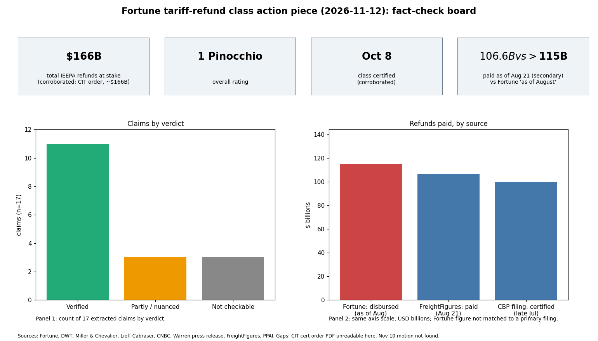

Overall: 1 Pinocchio. Of 17 claims extracted, 11 verified, 3 partly supported or framed misleadingly, 3 not checkable here. No outright false fact found.
| Claim | Verdict | Evidence |
|---|---|---|
| SCOTUS ruled in February IEEPA tariffs exceeded presidential power | Verified | Learning Resources v. Trump, Feb 20, 2026 (law-firm and news summaries) |
| About $166B in refunds at stake | Verified | CIT order amount ~$166B (Fox Rothschild, Freeman); estimates range $130B-$175B |
| Freestyle World v. US is the class action in CIT | Verified | Lieff Cabraser, DWT |
| Class certified Oct 8 | Verified | DWT, Miller & Chevalier, BDO |
| Judge Eaton ruled in March all importers entitled to refunds | Verified | Eaton ruling quoted by Volokh/Cleary, Mar 2026 |
| Universal refund order followed (April) | Verified | Apr 17, 2026 injunction (Foley/DWT summaries) |
| Administration appealed in June | Verified | Federal Circuit appeal Jun 2-3 (Troutman, DWT) |
| DOJ: CBP has no authority to refund without a court order | Verified (substance) | Government argument per Foley/Hogan Lovells; verbatim wording not located |
| Warren wrote CBP in June | Verified | Warren press release, Jun 30 (letter dated Jun 29) |
| Wyden likely Finance chair; leads repeal effort starting with Canada | Verified | CNBC Nov 8, 2026 |
| Tariffs/affordability hurt Republicans in midterms | Verified (as characterization) | CNBC: Democrats won midterms in a landslide |
| Class counsel asked CIT to order universal refunds to 330,000+ importers, whether or not they sued | Partly | Class excludes those who already sued and (per DWT) covers duties Feb 1 2025-Feb 19 2026, excludes Brazil/India orders; 330,000 not found (FindLaw ~300,000) |
| More than $115B disbursed as of August via CAPE | Partly | Secondary: $106.6B paid as of Aug 21, ~$100B certified late July; $10B overstatement previously corrected; Treasury MTS not checked |
| Headline: importers 'one step closer' to universal rebates | Partly / misleading | Certification is not a refund order; universal injunction stayed for non-filers pending appeal; class relief needs a further injunction and likely Federal Circuit appeal |
| Motion filed Tuesday (Nov 10) for relief order | Not checkable here | No Nov reporting or docket found |
| DOJ deadlines Nov 13 (answer) and Dec 9 (motion response) | Not checkable here | No docket access; DWT said no government deadline stated |
| Thousands unpaid due to CAPE errors, resources, paperwork, third-party IOR | Not checkable here | Plausible per practitioner commentary; no count available |
Confidence: high on legal timeline, medium on class scope, low on disbursement total.